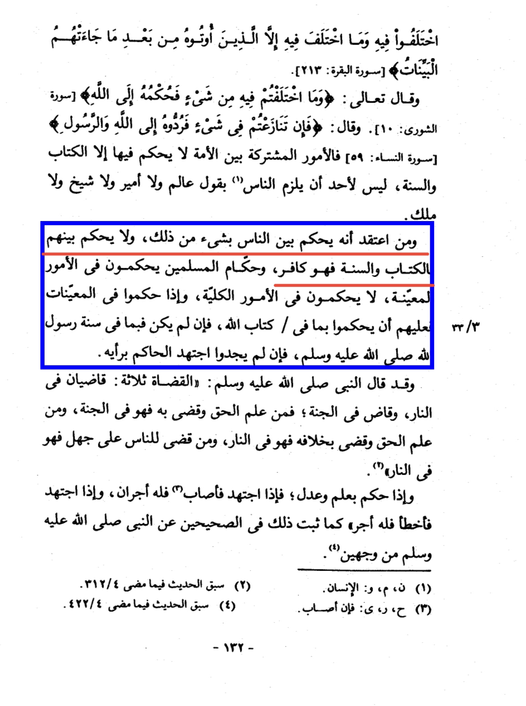
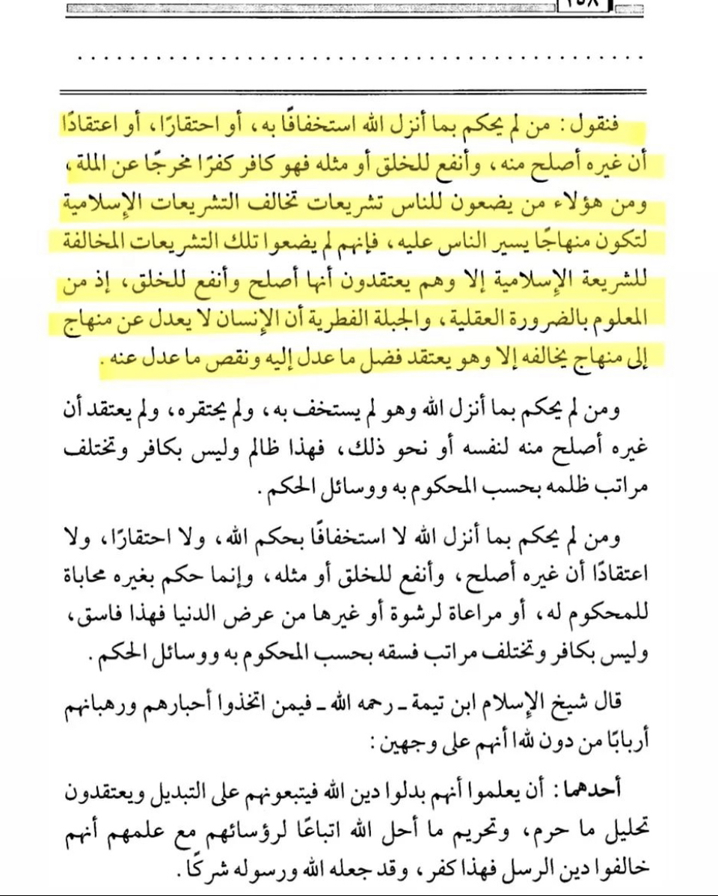

Imam Ibn Taymiyyah: “And whoever knows that he rules between the people with some of them (non-Shar'i laws),
and does not judge between them according to the Book (Qur'an) and the Sunnah, then he is a Kaafir.”
منهاج السنة النبوية في نقض كلام الشيعة والقدرية ـ ابن تيمية

~ Shaykh Uthaymīn [رَحِمَهُ ٱللَّٰهُ] said:
”Whoever does not rule by what Allah revealed because he thinks little of it, or looks down on it,
or believes that something else is better than it, and is more beneficial for the creation or similar
(beliefs), then he is a kafir whose kufr expels him from the الملة (religion).”
١٥٩ ~ شرح الا صول الثلاثة
